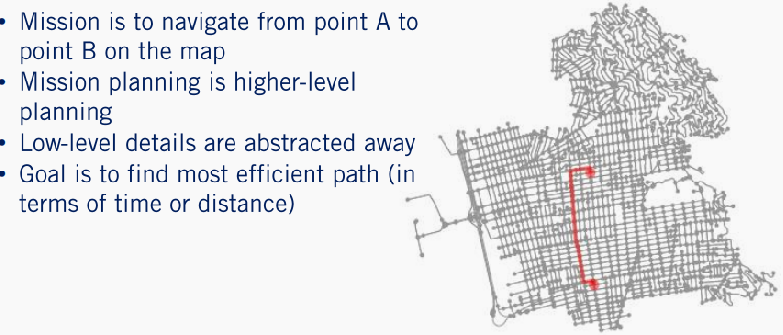
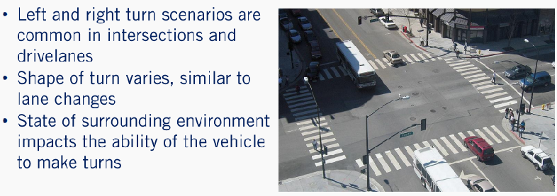
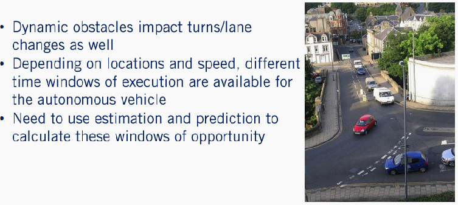
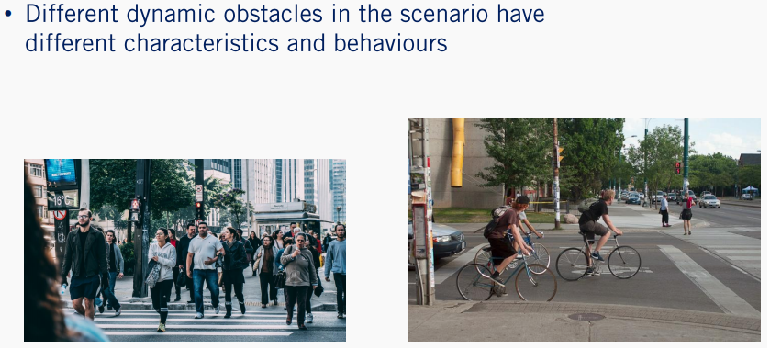
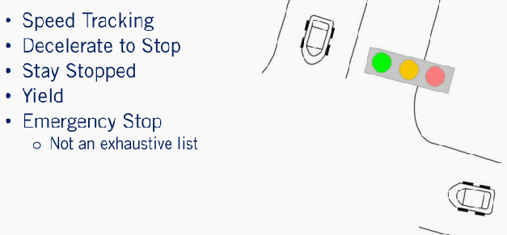
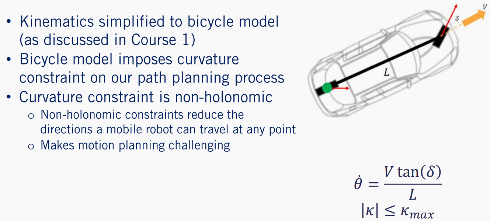
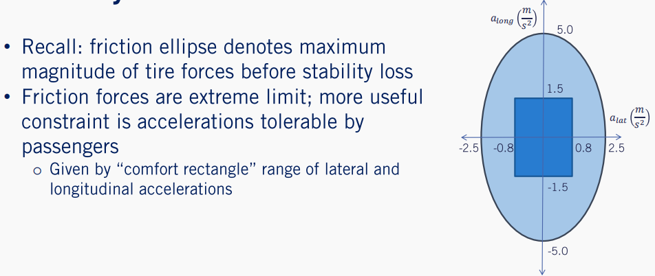
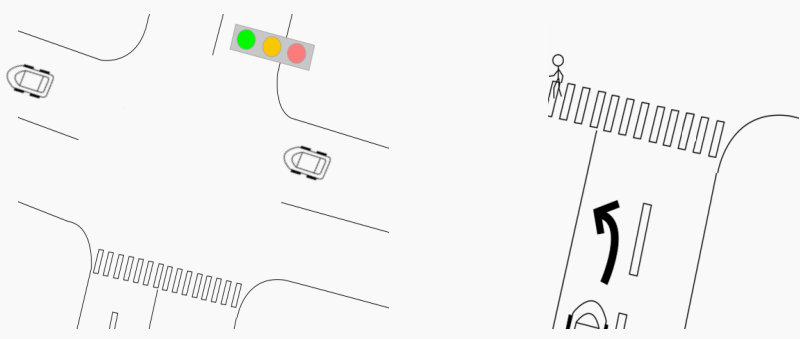
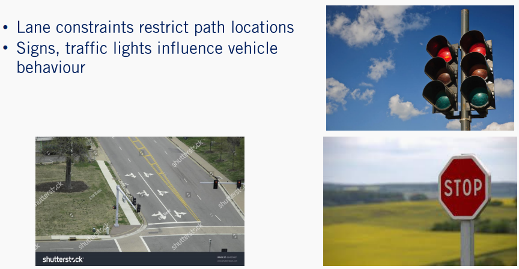

Module 1 - The Planning Problem
Hello everyone. Welcome to the first module of our motion planning course. In this module, you will learn about the motion planning problem in autonomous driving. The motion planning problem is the task of navigating the ego vehicle to its destination in a safe and comfortable manner while following the rules of the road. As discussed in the first course of this specialization, this task can be decomposed into a hierarchy of optimization problems. Each of which will have different constraints and objectives. By the end of this module, you should have an understanding of the types of subproblems that need to be solved when performing motion planning for autonomous driving.
Lesson 1: Driving Missions, Scenarios, and Behavior
Learning Objectives
- Understand what the autonomous driving motion planning mission entails
- Identify important autonomous driving scenarios based on the road structure and obstacles present
- Identify useful driving behaviors to handle autonomous driving scenarios
In this video, we will discuss the autonomous driving mission. Some of the most prevalent on-road driving scenarios, the required behaviors to handle each scenario, and some of the important edge cases that highlight the challenges of motion planning for autonomous driving. Specifically by the end of this video, you will understand what the goal of autonomous driving motion planning missions is, identify some important on-road driving scenarios, and identify some useful driving behaviors to handle these scenarios.
1. Autonomous Driving Mission
First, let's discuss the autonomous driving mission. At a high level, the autonomous driving mission is to get from point A to point B. The autonomous driving mission views this from a navigation perspective, where we need to navigate from one point on a map or current position, to another point corresponding to our final destination.

In doing so, it should take the connection of different streets and their associated traffic into consideration. In order to find the most efficient path in the road network in terms of travel time or distance. Planning for an autonomous driving mission abstracts many of the important lower-level variables away from the problem in order to simplify the mission planning process. However,these lower level variables such as roads structures, obstacles, and other agents on the road, are crucial to the autonomous driving motion planning problem. These lower level variables defined different driving scenarios. We have discussed some of the driving scenarios already in Course 1. So this will serve as a refresher and will help put these scenarios into emotion planning context.
2. Road Structure Scenarios
- Lane maintenance
First, let's introduce some common scenarios related to the road structure. By road structure, we mean the lane boundaries and the regulatory elements that are relevant to the driver. The simplest scenario when driving is simply driving in a lane and this is often called lane maintenance.

In the nominal case, this is when the car follows the central line of it's current lane. In this scenario, our goal is to minimize our deviation from the center line of the path as well as reaching our reference speed which is often the speed limit to ensure efficient travel to our destination.
4. Road Structure Scenarios (cont’d)
- Lane change
A more complex scenario would be when the car has to perform a lane change maneuver. Even when there are no dynamic obstacles present in either lane, we will need to optimize the shape of the lane change trajectory within the constraints of lateral and longitudinal acceleration.

The speed limit of the road, and the time horizon for execution of the maneuver. Clearly, all of these parameters will affect the shape of the trajectory, resulting in either slow passive lane changes, or more aggressive less comfortable lane changes.

- Turn left or right
The third common scenario, is when the car needs to perform a left or right turn. This is often required when the autonomous car has to handle intersections. As with the lane change, the shape and aggressiveness of the turn will vary depending on the situation. In addition, the feasibility of actions and autonomous vehicle can take is affected by the state of the surrounding environment. For example, the autonomous vehicle cannot perform a left turn at a red light even if the intersection is clear.

- U-turn
As a final example, we have a U-turn. Which is important for navigating certain scenarios where the car needs to change direction efficiently. As with a lane change and both the right turn and left turns, that you U-turn will have parameters that affect the shape of the trajectory. The U-turn is also highly dependent on the state of the surrounding environment, as it is not always legal to perform a U-turn at an intersection depending on your home countries laws.
5. Obstacle Scenarios
Now, road structure is not the only factor in on-road scenarios. Static and dynamic obstacles will dramatically change both the structure of the scenario as well as the difficulty in determining the required behavior for a scenario. In the language of autonomous driving, dynamic obstacles are defined as moving agents in the planning workspace of the ego vehicle.

In contrast, static obstacles or obstacles that are not moving such as parked cars, medians, and curves. Static obstacles restrict which locations the autonomous car can occupy as it plans paths to its destination. This is because the car occupies space as it travels along its path. If this overlaps with an obstacle, our plan will obviously results in a collision. On the other hand, dynamic obstacles have a larger impact on our velocity profile and driving behavior. A common example in driving is when there is a lead vehicle in front of our car while we are performing lane maintenance. Clearly, this vehicle will have an impact on our decision-making. Let's say this car is going 10 kilometers per hour slower than our reference speed. If we maintain our current reference speed, we will eventually hit the leading vehicle. Ideally, we would like to maintain a time gap between ourselves and the lead vehicle which is defined as the amount of time until we reach the lead vehicles current position while maintaining our current speed. So now we have two competing interests. We want to stay as close to our reference speed as possible, while maintaining a time gap between our car and the lead vehicle for safety.
6. Obstacle Scenarios(cont’d)
Dynamic obstacles will also affect our turn and lane change scenarios. Depending on their location and speed, there may only be certain time windows of opportunity for the ego vehicle to execute each of these maneuvers.

These windows will be estimates as they will be based on predictions of all other agents in the environment. An example of this, is when we are waiting for an intersection to be clear before performing a left turn. The behaviors that are autonomous vehicle decides to execute will depend heavily on the behavior of oncoming traffic. If there are nearby oncoming vehicles that are moving quickly towards us, then the only safe behavior would be to yield to them. However, if there is a longer distance between the autonomous vehicles and oncoming traffic, the autonomous vehicle will have a window of opportunity to perform its turn.

Now, not all dynamic obstacles are cars as there are other types such as cyclists, trucks, and pedestrians. Each of them will have their own behaviors and have their own rules to follow on the road. As you've seen throughout this specialization even though we've only defined the most likely core components of the driving task, there's clearly a rich and diverse set of potential scenarios that need to be handled.
7. Behaviors
Speed tracking,deceleration to stop, staying stopped, yielding and emergency stopping
Despite this complexity, the majority of behaviors for these scenarios can be thought of as a simple composition of high-level actions or maneuvers. An example set of these high-level maneuvers would be speed tracking, deceleration to stop, staying stopped, yielding, and emergency stopping. Let's dig into what each of these high-level actions really mean. Speed tracking is the nominal driving behavior. We have a reference speed or speed limit and we maintain that speed while moving forward in our lane.

Decelerating to stop is pretty self-explanatory. If we have a stop sign ahead, we need to smoothly slow down to a stop to maintain comfort. Staying stopped is required for certain regulatory elements. If we were at a red light, then we need to remain stopped until the light turns green. Yielding is also required for some regulatory elements. Most notably, if we're at a yield sign and there's traffic that has higher precedence than us, we need to slow down and wait until it is clear for us to proceed. Finally, emergency stops occur when an issue is detected by the autonomous car and the vehicle needs to stop immediately and pull over. These high-level behaviors can also be augmented by navigational behaviors, such as performing lane changes and turns. By bringing all of this together, we can now cover the most basic driving scenarios. While this set of maneuvers has good coverage, it is important to note that this list of behaviors is in no way exhaustive and that there are many ways to increase behavioral complexity to handle evermore interesting scenarios.
8. Challenges

In terms of the set of driving scenarios, we've really only begun to scratch the surface. There are many unusual instances that make the autonomous driving problem and extremely challenging task. For example, suppose that you have a jaywalking pedestrian, we would then have an agent violating their rules of the road which makes their behavior unpredictable from a motion planning perspective. Another example, is when a motorcyclist performs lane splitting, which may or may not be legal depending on your home country. This behavior can be confusing for an autonomous car, which often uses the lane boundaries to inform the predictions of other agents on the road.
9. Hierarchical Planning Introduction
As you can see, solving the motion planning problem is a complex task. To solve for the optimal motion plan without any forms of selective abstraction and simplification, would simply be intractable. To remedy this, we instead break the task up into a hierarchy of optimization problems. By doing this, we can tailor the inputs and outputs of each optimization problem to the correct level of abstraction which will allow us to perform motion planning in real-time. In this hierarchy, higher in the hierarchy means that the optimization problem is at a higher level of abstraction.

At the top of this hierarchy is mission planning, which focuses on solving the autonomous driving mission of navigating to our destination at the map level which we discussed earlier. Next, we have the behavior planning problem. Which decides which behaviors the autonomous vehicles should take depending on its current driving scenario. Based on that maneuver, we then use the local planner to calculate a collision-free path and velocity profile to the required goal state. In our case, we will decouple this process into path planning and velocity profile generation to improve performance. Finally, our computed motion plan will be given to the controllers to track which we've designed in the first course. Each of these optimization problems will have different objectives and constraints used to solve it. Which we will be discussing in the coming lessons.
10. Summary
Now that we've gone through our introduction to these motion planning problems, let's summarize what we've discussed in this video. We've identified the autonomous driving motion planning mission as the problem of navigating from the ego vehicles current position to a required destination. We've also looked at some common on-road driving scenarios and how the road structure as well as the obstacles present dictate the nature of the scenario. We then discussed some useful driving behaviors to navigate the scenarios we've identified. Finally, we've described a hierarchy of motion planning optimization problems. Which we will discuss in detail throughout the remainder of this course. Hopefully this lesson has given you some insight into the different scenarios that you as an autonomy engineer will encounter when designing a motion planner for an autonomous vehicle. The key takeaway here is that while we've enumerated many of the basic scenarios and behaviors required for autonomous driving, there are still many open questions about how to plan safe and robust behaviors across all potential driving scenarios. In our next lesson, we'll explore some common constraints that you will encounter when solving the motion planning, optimization subproblems in our hierarchy. See you then.
Lesson 2: Motion Planning Constraints
Learning Objectives
- Understand how the vehicle’s kinematics and dynamics constrain the motion planning problem
- Understand how static and dynamic obstacles affect motion planning
- Understand the impact of regulatory elements on motion planning
Welcome back. In this video, we'll discuss some of the most important constraints involved in motion planning. These constraints are often crucial for maintaining stability and comfort within the vehicle, as well as maintaining the safety of all agents in a given driving scenario. Specifically, you will learn about how the vehicle kinematic and dynamic models constrain our motion planning for the vehicle. You will learn about how static and dynamic obstacles impact our vehicle motion planning. Finally, you will see how regulatory elements impact the behaviors available to us during the motion planning process. Let's get started.
1. Bicycle Model
The first of the motion planning constraints we will work with is related to the vehicle kinematics. In motion planning for autonomous driving, as we have discussed in course one, the kinematics for the ego vehicle are often simplified to what is known as the kinematic bicycle model. One reason why this model is chosen is that bicycles have a range of acceptable steering angle values similar to a car. For a fixed velocity V, this range of steering angle values and delta corresponds to a range of admissible curvatures, kappa that the vehicle can follow. This means that when performing motion planning while using the bicycle model, there is a maximum magnitude of curvature that can be executed when traversing a given path denoted by kappa max.

The same holds for autonomous cars. This means that the curvature of any path we plan needs to be mindful of this maximum curvature. Unfortunately, this is what's known as a non-holonomic constraint. Intuitively, this means that the constraint doesn't depend on the only the state of the robot, but also on how the robot got to its current state. Non-holonomic constraints reduce the number of directions a robot can take at any given point in its workspace. In general, non-holonomic constraints make the planning problem much more complex. Now you may be wondering how does curvature impact the shape of a given path in our motion plan.
2. Curvature
To give you an intuitive understanding of what curvature is, here we have an arbitrary curve. For each point along the path, we can fit a circle to that point based on the instantaneous rates of change of the curve in space at that particular point. This is analogous to the idea of the instantaneous center of rotation we use to derive the bicycle model in the first place. Based on the shape of the plot, it appears different points are more curvy than others. So, our intuition should be the different points along the curve will have different curvatures.

For example, here we have a circle fit to a particular point on the curve. As you can see, it has quite a large radius r, and intuitive interpretation of the curvature is that it's the inverse of the radius of the circle fit to that particular point along the curve. Since this radius is quite large, this point has relatively low curvature, which can be seen from the plot as the point has a more gentle bent. If instead we look at a second point on this curve, we can see that it has a smaller radius as it compared to the previous point. This in turn corresponds to a point of higher curvature and can be seen from the plot, this point has much more aggressive bend than the previous point. While this circle fitting approach is useful as a geometric interpretation, a more precise mathematical formulation is given here for the curvature. It can be computed using the first and second order derivatives of the x and y components of a given path defined with respect to arc length. These arc length derivatives are given by x prime, y prime, x double prime, and y double prime.
3. Vehicle Dynamics
The next constraint will be discussing is derived from the vehicle dynamics. These dynamic constraints focus on keeping the car in a stable safe state. The first of the dynamics constraints is imposed by what is called the friction ellipse of the car. If you recall, we discussed tire slip and the friction ellipse in our bicycle model during course one.

The friction ellipse denotes the maximum magnitude of the friction forces that can be generated between a car tire and the road. If the applied forces of the car's engine exceed the friction forces of the tire, the tires will slip on the road surface. The turning functionality of a vehicle relies on the tires gripping the road surface. So to maintain control and stability, the car must remain within the friction circle. At the end of the day, this boils down to lateral and longitudinal acceleration constraints. In general, though the acceleration constraints are often much higher than what is physically comfortable for the passengers inside the car. Therefore, in non-emergency situations we often focus on the comfort rectangle of accelerations. These values constrain, the lateral and longitudinal accelerations to each lie within a range of comfort, denoted on the longitudinal acceleration along and lateral acceleration alat axis. This is shown here, where the comfort rectangle in blue lies well within the friction ellipse shown in green. This results in a tighter constraint on the feasible accelerations for a motion plan than the friction ellipse requires.
4. Dynamics and Curvature
From the lateral acceleration constraints, as well as the curvature of the path, we have now indirectly constrained the velocity of the car. The velocity of the car V is a function of the lateral acceleration of the car alat, as well as the instantaneous turning radius of the path r. Recall that the instantaneous curvature along the path kappa is the inverse of the turning radius of the car.

If we now combine these equations, we can see that the square of the velocity is constrained by the maximum lateral acceleration, alat max which is a constant, as well as the curvature of the path kappa, which changes at each point along the path. Because of this, it's clear that when we are generating a velocity profile for our autonomous vehicle, we have to take the curvature of the path as well as the vehicles maximum lateral acceleration into consideration.
5. Static Obstacles
Static obstacles also provide constraints upon our path planning process. Since static obstacles such as a parked car or a construction pylon have fixed positions that do not change with time, they are often modeled by blocking out certain portions of the ego vehicles workspace. This concept will be covered in greater detail in module two of this course, where we discuss the occupancy grid map. Essentially, static obstacles constrain the locations that a car can occupy along its path.

There are numerous ways to perform static collision checking. One way is to check the swath of the vehicle as it travels along a given path. This swath is the union of all positions occupied by the body of the ego vehicle, as the ego vehicle traverses the path. If the swath overlaps with a static obstacle, that path is infeasible. Another option for fast collision checking is to approximate the body of the car with a set of circles, and calculate the circle locations as the car moves along its path. If a static obstacle lies within any of the circles, then the path is deemed infeasible. The union of these circles is often larger than the body of the vehicle, ensuring a conservative approximation. We'll be discussing this in more detail in future lessons.
6. Dynamic Obstacles
Dynamic obstacles on the other hand provides some of the most challenging constraints on the motion planning problem. Different classes of dynamic obstacles such as cars, bicycles, and pedestrians will all have different behaviors and motion models. Constraining our motion plan based on the behavior of these other agents will often involve prediction, which is subject to uncertainty. However, if we take the conservative approach and constrain ourselves to all possible behaviors of all agents, our motion planning problem quickly becomes over-constrained and impossible to solve meaningfully. The degree to which we balance between the safety of conservatism and the aggressiveness required for forward progress, is an active area of autonomous driving research.

As a simple example, a case where dynamic obstacles will constrain our motion will be at an intersection. If two cars are entering the intersection orthogonal to one another, then we have a potential crash scenario. One way to check for whether a collision will occur, is to track the angle formed by the ego vehicles direction of travel and the vector from the ego vehicles location to the other agent's location. If this angle is unchanging as time progresses, then the ego vehicle will collide with the other agent, and our motion planner will need to decelerate to prevent this. Therefore, the dynamic obstacle forces us to modify our behavior based on how the obstacle proceeds in our driving scenario. Another example which we discussed in the previous lesson was when a leading vehicle is present in front of the ego vehicle. This leading vehicle places an upper constraint on the ego vehicles longitudinal velocity, for if we exceed their speed while remaining in the same lane we will eventually crash. As you can see, dynamic obstacles will constrain both our behavior planning process, where we make maneuver decisions, as well as our local planning process, where it will affect our velocity profile planning. We will be discussing this in further detail in subsequent modules.
7. Rules of the Road and Regulatory Elements
The final constraint that we will discuss encompasses the rules of the road as well as the regulatory elements present in the ego vehicles workspace. While the rules of the road provides some constraints to the planning problem, they also help us make informed decisions about other agents behaviors in the environment. For example, oncoming traffic is highly likely to stay in its lane, and not try to collide with our ego vehicle head on. This can help reduce the search space when trying to predict what other agents will do.

One of the most common constraints imposed by the rules of the road are the lane constraints. The lane constraints simply put, are there to prevent our motion plan from leaving the ego vehicles current lane unless it is legal to do so. Lane constraints also inform the ego vehicle where it is safe to perform turning maneuvers as well. There are other soft rules of the road that we need to respect as well, such as maintaining a time gap between the ego vehicle and leading vehicles in our lane. The time gap is the amount of time that it would take for the ego vehicle to reach the leading vehicles current position while traveling at the ego vehicle's current speed. Maintaining a sizable time gap helps ensure safety during motion planning, by giving the ego vehicle ample reaction time to events in the workspace. The regulatory elements in the workspace will also impact our driving behavior. The ego vehicle clearly needs to respect red lights and stop signs to ensure safety, but also needs to be aware of speed limits in different areas and other dynamic regulatory elements, such as those presented by construction sites. In general, regulatory elements will have a large impact on which behaviors are available to us when performing motion planning, and will be discussed in further detail in module five.
8. Summary
Now that we've discussed many of the autonomous driving motion planning constraints, let's summarize what we've learned so far. In this video, we first reviewed our bicycle model, and looked at how the models kinematics and dynamics, as well as the path curvature constrain our motion planning problem. Next, we looked at how static obstacles limit the locations our car can safely occupy, which restricts our feasible motion planning workspace, as well as how dynamic obstacles impact the maneuvers available to the ego vehicle and its velocity profile. Finally, we discussed the role of regulatory elements and how they affect our driving behaviors. Hopefully, this lesson has given you some insight into some of the constraints of the motion planning problem for autonomous driving. In our next video, we'll dive into some of the optimization objectives used for solving the motion planning problem. See you there.
Lesson 3: Objective Functions for Autonomous Driving
Hi everyone, and welcome to lesson three. In this video, we will explore some of the objective functions most commonly used in the autonomous driving motion planning problem formulation. In this context, the objective function of our motion planning problem gives us a way of scoring our current motion plan, and allows us to optimize the motion plans such that it has desirable characteristics. After completing this lesson, you'll be able to list some useful objective functions that can be used in motion planning for autonomous driving. You will also understand the benefits that each objective function offers to the motion planning process. So let's get started. When performing path planning, the simplest and most intuitive goal is that we would like to reach our destination as efficiently as possible. In the path planning context this, often translates to minimizing the arc length of the path that we're planning. What is the arc length? Intuitively, the arc length of the path is the total accumulated distance the car will travel as it traverses the path. In many cases, the path will be parameterized by arc length. So this can be formulated as a penalty term proportional to the arc length. In other cases, we will have to solve an integral numerically to calculate the arc length of a path. The general arc length integral is shown here in the first equation, where Sf is the total accumulated arc length, Xi is the starting x coordinate of the path, and Xf is the end x coordinate of the path. By minimizing arc length, we are computing the shortest path from our current location, through our required destination. When optimizing a velocity profile, time to destination is often the objective we would like to minimize. In terms of arc length, this is the same as integrating the inverse of the longitudinal velocity over the path as a function of arc length. Intuitively, this is equivalent to dividing the total distance by the velocity traveled along the curve at each point. Except since the velocity changes along the path, we formulate it as an integral. This integral is given in the second equation, where Tf is the total time of the profile. By minimizing this integral, we are minimizing the time to reach the destination while following a given planned path. As an example, let's look at two possible paths between the same start and end locations. The first path clearly has a longer arc length than the second path, and is therefore less efficient at the task of reaching its destination. We can see that even though they have the same initial and final states, the second path will result in a lower value of the arc length objective function, which suits are driving task more favorably. Now, in path planning for autonomous driving, we may be given a reference path we'd like to follow. In many cases, this will be given to us by our mapping module as the center line of a length, or the required path for a turn in an intersection. To ensure that we follow the reference path as closely as possible, we include what is known as an integral of difference term, or IOD for short. Essentially, it penalizes deviations from the input reference path Xref, as we traverse are calculated path as shown in the first equation. Similarly, when performing velocity profile optimization, we often want to minimize the difference between our velocity profiles speed throughout the path with some reference speed Vref, whether it will be the speed limit or determined otherwise. This is shown in the second equation. While this can be formulated as an absolute difference penalty, it is often the case that we want to penalize exceeding speed limits more harshly than staying below the speed limit. So we may add what is called a hinge loss term to our objective shown in the third equation. Essentially, this term is only active when the velocity profile exceeds the speed limit, that is when the difference between our speed and the speed limit is positive, otherwise this term is zero. This allows us to penalize speed limit violations more harshly while still allowing us to encourage the autonomous vehicle to reach its required reference velocity. The next objective we'd like to tackle is rides smoothness. Recall from the previous lesson that in order to maintain stability and comfort, we constrained our maximum acceleration magnitude. When optimizing comfort in the objective function of our velocity profile, we instead turn our focus to minimizing the jerk along our trajectory. What is jerk? We're not referring to that of noxious driver that you just cut off. Jerk is the rate of change of acceleration with respect to time, or the third derivative of position. The jerk along the car's trajectory greatly impacts the user's comfort while in the car. So when planning our velocity profile, we would like to keep the accumulated absolute value of jerk as small as possible, shown here by this integral. Let's look at an example of two different velocity profiles. On the left is a linear ramp profile which maximizes jerk at the start and end of the profile. This is shown in the large spikes in the jerk at the start and end of our plot. For passengers, this can be quite uncomfortable. If we compare this with a bi quadratic profile as seen on the right, We can see that there are no jerk spikes which will result in a much smoother ride for the passengers. Because of this difference in comfort, it is important to choose profiles that reduce jerk that passengers feel when possible. Now, when planning paths, we have to be mindful that the structure of our path will impact the comfort of our velocity profile as well. Recall from the previous lesson that paths with high curvature constrained the maximum velocity along the path to a low value in order to remain within the friction ellipse of the vehicle. To ensure that we avoid points of high curvature along our path, we need to formulate some penalty for large absolute curvature values, and objective function that is commonly used to represent this penalty is known as the bending energy of the path. Essentially, it is the square curvature integrated along the path, where once again Kappa denotes the curvature. This objective distributes the curvature more evenly along the path, preventing any one along the path from reaching too high a total curvature value. As an example, in this path, we have a path planned for a left turn with quite a harsh bend before reaching the goal state. According to our bending energy objective, this will be highly penalized as there is a point of peaks curvature along the path. If we were to plan a velocity profile for this path, we would need to decelerate greatly by the time we reached the bend in the curve. Otherwise we would sacrifice comfort of our passengers and potentially even vehicle stability. If we instead look at the path on the right, we have a path for a left turn with a more widely distributed lower overall curvature. This will result in a smoother more comfortable term, and will allow us to maintain a reasonable speed while still staying within the comfort rectangle when optimizing our velocity profile. Now that we've gone through a variety of objective functions for motion planning, let's take some time to summarize what we've discussed in this video. We first discussed objective functions related to efficiency, and also discussed how they reduce path length and transit time. We discussed how to encourage trajectories to track reference paths and velocity profiles, as well as how to improve comfort along a given trajectory by penalizing high-path curvature and jerk. By now, you should have a general idea of some types of objective functions you will need to consider when optimizing paths and trajectories. When designing an over-arching objective function, each of these terms will need to be combined into one function, often as a weighted sum. The particular combination of weights you choose is an engineering decision, and you will need to fine tune your choice depending on a specific application. Of course, we have only scratched the surface on a rich topic of optimization objectives for path and trajectory planning. As you progress as an autonomy engineer I'm sure you'll be able to come up with interesting and useful objectives functions yourself. In our next video, we will discuss ways to decouple the motion planning problem into simpler and smaller sub-problems, as well as outline different approaches to solving each sub-problem. See you there.
Lesson 4: Hierarchical Motion Planning
Hi everyone? So far in this module, we've described the planning problem in general, we've described a hierarchy for solving the complex planning problem, and we described the constraints and objectives that make planning so hard. In this lesson, we'll discuss the hierarchy for decomposing, the overall planning problem into smaller sub-problems in more detail. By the end of this video, you will understand the scope of mission planning, behavioral planning, and local planning sub-problems. You'll be able to list some methods for solving each of the problems, you'll also understand why this hierarchy is used in many self-driving car systems progressively refining the plans for motion through the environment. Let's begin by reviewing our planning hierarchy. If you recall from lesson one of this module, we introduced the hierarchical structure we will use for motion planning and it's autonomous driving. We described each level of the hierarchical planner as defining its own optimization problem, with each level of the hierarchy having a specific degree of abstraction with respect to the relevant objective function and constraints. The mission planner is the highest level optimization problem where we focus on map level navigation from the vehicles current position, to a given destination. Behavioral planning on the other hand will focus on the current driving scenario, and will decide which maneuver to execute based on other agents in the workspace, and the rules of the road. Finally, we have the local planner, which will focus on generating kinematically feasible, collision-free paths, as well as comfortable velocity profiles in a decoupled manner. This will then be output to our vehicle controller that we discussed in course one. By breaking the planning problem into sub-problems, we constrain how much knowledge and computation is required at each part of the motion planning process. Which allows for more efficient computation. This comes with a trade-off however, as when we decompose the problem, each sub-problem loses some domain information. We end up with a sub-optimal motion plan as compared to emotion plan that takes all aspects of the planning process into consideration at the same time. For autonomous driving, the ability to run our motion planner in real-time is crucial, so this trade-off is almost always worth it. Some motion planning methods integrate the differing sub-problems in varying degrees. But in this lesson, we're going to focus on this particular hierarchical decomposition. Next, let's go over each of these steps in detail. As mentioned, the first and highest level step in our hierarchical motion planner is the mission planner. The mission planner focuses on map level navigation from the ego-vehicles current position, through a required destination. Because the scale of mission planning is often on the order of kilometers, we require a high level of abstraction to make the problem tractable. In this sense we often ignore aspects of the motion planning problems such as obstacles and regulatory elements, and instead focus on the macro aspects of the problem such as traffic and road connections. By doing this, we can simplify the problem to the point where we can plan out a required driving mission, over a large spatial scale. An example is shown here where we are planning between two points on a map of Berkeley, California, taking into consideration the various intersections and road connections on the map, as well as the directionality of each road. Doing so, we then compute the shortest path in our road network to our destination. This can be done in a variety of ways. If we focus on the spatial length of the roads in the road network, we can construct a graph from the road network and then use Dijkstra's algorithm or A search to find the shortest path. If instead we focus on time to destination as our objective to minimize, the problem becomes more complex but can still be solved using the same algorithms. We will discuss these methods in much more detail in module three. The next step in our hierarchical planner is the behavior planner. What is the behavior planner? The behavior planner is a portion of the motion planner that focuses on high level decision making required to follow the rules of the road, and recognize which maneuvers are safe to make in a given driving scenario. We discussed many of these scenarios in our first lessons together. For example, recall that one of the scenarios we discussed was performing a turn at an intersection. Let's say for the sake of example, the ego-vehicle has entered an intersection to perform a left turn and the light is turning green. The behavior planner should make it clear to the path planner and velocity generator, that is only safe to proceed when there is sufficient time gap between the ego-vehicles position, and the oncoming traffic and pedestrians in the intersection. Following the taxonomy of maneuvers we discussed in our first lesson, the behavior planner should output a yield maneuver to the remaining portion of the motion planner, which will ensure that they only proceed once it is cleared to do so. Of course, our taxonomy is in no way universal, there are many possibilities when deciding what types of maneuvers and what scope of behaviors your autonomous car should exhibit. Now you may be wondering how is the behavior planner are supposed to take in all of the information about the autonomous vehicles surroundings and calculate what maneuver it should execute in an efficient manner. This is an area of active research and there is no settled best method to achieve this. In general, there appear to be three different prevailing architectures to solve the behavioral planning problem. The first group are methods that use finite state machines. The key concept behind finite state machines is that they are composed of: states which represent the ego-vehicles required maneuvers, and transitions which dictate how the state should evolve depending on the inputs. These may be things like: vehicle locations, traffic light transitions, or any other element of interest in our current driving scenario. As an example, one could imagine a state machine that handles stop signs to have a state such as decelerate to stop, stop and track speed. When a car encounters a stop sign, it would first enter the decelerate to stop state, where the behavioral planner would then signal that it is time to decelerate. Once it has stopped at the stop location, the behavior planner will remain in the stop state for a set amount of time. Once the time has been exceeded and the intersection is clear, the behavior planner will then enter the track speeds state which means it is safe to continue driving. We go through this example in more detail in a later module in this course. It is important to note that when deciding which transition to take at each step of the finite state machine, we focus entirely on the current state, and the inputs to the finite state machine. Essentially, this means that the finite state machine is memoryless. Its past states do not impact the current transition or output. This is a helpful property that makes finite state machines straightforward to implement, but can lead to many states that are similar for systems where sequences of actions do matter. The next common type of behavioral planners are rule-based systems. Essentially, these type of systems consist of a hierarchy of rules, where the hierarchy represents the relative importance of each rule. Each rule may correspond to a rule of the road such as stopping at a red light, or may correspond to a driving best practice such as maintaining a two second gap, between the ego-vehicle and a leading vehicle. The state of the ego-vehicle and its surroundings would then be fed into the rule-based system in the form of logical predicates. These predicates would then be evaluated against every rule and based on the rule priority, the maneuver corresponding to the highest priority rule would be output to the rest of the motion planner. For example, suppose we have the following two rules. The first rule checks if there is a green light ahead and issues a decision for the car to continue driving. While the second rule checks if there are pedestrians in the cars lanes and issues a decision to perform the emergency stop maneuver. In our system, stopping for a pedestrian in front of us is higher priority than driving through green light. Now suppose we were driving along and observe a green light at the upcoming intersection as well as a pedestrian crossing illegally in front of the intersection. Both rules would trigger in this case but since the emergency stop is higher priority, that is the maneuver that the rule-based system will output. As you can imagine, it is both important and challenging to make sure rule-based systems are logically consistent. Otherwise, they can exhibit erratic behavior. The final group of behavior planning approaches are machine learning-based methods. In particular, an interesting example of this method is using reinforcement learning. Reinforcement learning is the process of determining an optimal decision-making policy that maximizes some reward function R. This reward function values the quality of a given chain of actions for all time steps discounting future states more heavily than the present. The process of reinforcement learning requires the agent to perform actions in an environment often given by simulation. This agent is then rewarded according to its interaction with the environment. Which then allows it to converge to an optimal policy through successive interactions. This group of behavior planning approaches is rapidly expanding area of research and unfortunately, a deep dive is beyond the scope of this course. The next and final module in our hierarchical planner is the local planner. As mentioned earlier, the goal of the local planner is to generate kinematically feasible and collision-free paths as well as comfortable, and safe velocity profiles for the ego vehicle. We decompose the local planning problem into two sub-problems; path planning and velocity profile generation. The key ingenuity behind developing a good path planning algorithm is reducing the search space for optimization. There are three main categories of path planners; sampling-based planners, variational planners and lattice planners. Sampling-based planners randomly sample the control inputs of the car uniformly, in order to generate potential paths for the car to traverse. One of the most iconic sampling-based algorithms is the Rapidly Exploring Random Tree or RRT and its variance. These algorithms construct the branches of the tree of paths by generating points in randomly sampled locations and planning a path to the point, from the nearest point in the tree. If the path is free from collisions with any static obstacles, that path is added to the tree. This tree quickly explores the workspace with many potential paths and when a goal region is reached, the path that terminates in that region is returned. Sampling-based algorithms are often extremely fast but at the cost of potentially generating poorer quality erratic paths when run in a short number of cycles. Variational planners rely on the calculus of variations to optimize a trajectory function which maps points in time to positions in the workspace according to some cost-functional that takes obstacles and robot dynamics into consideration. Variational planners are usually trajectory planners, which means they combine both path planning and velocity planning into a single-step. So they do not have to decouple the path planning and velocity planning problems. As an example, suppose we start off with a given discrete sampling of a path in space. At first, it is in collision with an obstacle shown as well. A variational planner will iteratively move the discrete points such that they are smooth with respect to the robot's dynamics, as well as keeping them collision-free. By the end, the trajectory will be both collision-free and smoother with respect to the dynamics of the robot. However, variational methods are often slower, more complex and their convergence to a feasible path is sensitive to the initial conditions. An example of a variational method is the chomp algorithm. Variational planners go beyond the scope of this course, but for those interested, the chomp algorithm provides an excellent example for further exploration and is included in a link in the supplemental materials. The final group of path planners are lattice planners. Lattice planners constrain the search space by limiting the actions that the ego vehicle can take at any point in the workspace. This set of actions is known as the control set of the lattice planner. This control set, when paired with a discretization of the workspace, implicitly defines a graph. This graph can then be searched using a graph search algorithm such as Dijkstra's or A, which results in fast computation of paths. Obstacles can set edges that cross them to infinite cost. So the graph search allows us to perform collision checking as well. While the lattice planner is often quite fast, the quality of paths are sensitive to the selected control set. A common variance on the lattice planner is known as the conformal lattice planner. Where a goal points are selected some distance ahead of the car, laterally offset from one another with respect to the direction of the road and a path is optimized to each of these points. The path that best satisfies some objective while also remaining collision free is then chosen as the path to execute. In our previous video, we outlined some objectives that we can choose to influence the path planning process such as, arc length and bending energy. The second part of our local Plan is the velocity profile generation. Velocity profile generation is usually set up as a constrained optimization problem. Generally, we would combine many of the velocity profile objectives described in the previous video such as the goals of minimizing jerk or minimizing deviation from a desired reference. We also discussed some important constraints in lesson two. One of which was the rectangle of comfortable accelerations. This is in no way an exhaustive list of objectives or constraints. You will encounter many more in your time as an autonomy engineer. Once the objectives and constraints are formalized, it becomes a matter of solving the problem efficiently. One way to do this is to calculate convex approximations to the optimization domain and objectives, which helps ensure that our optimizer doesn't get stuck in local minima. Now that we've discussed each level in our hierarchical planner, let's summarize what we've covered in this lesson. We first went over mission planning and how our planner navigates through a map to get to our destination. Next, we discussed behavior planning. Where we need to select driving behaviors based on the situation at hand. Finally, we discussed the local planner, which we split into path planning and velocity profile generation. We gave a few examples of the types of path planning algorithms and we discussed how to optimize the velocity profile for a given plan path and reference speed. Congratulations, you've reached the end of the first module in the fourth course of our self-driving car specialization. Hopefully, you now have a good idea of what the different approaches are when designing a hierarchical motion planner. Throughout the rest of this course, we'll introduce the tools you need to solve each level of the motion planning problem. But before we do that, we're going to look at how to build occupancy grid maps for effective collision avoidance detection in the next module. See you there.